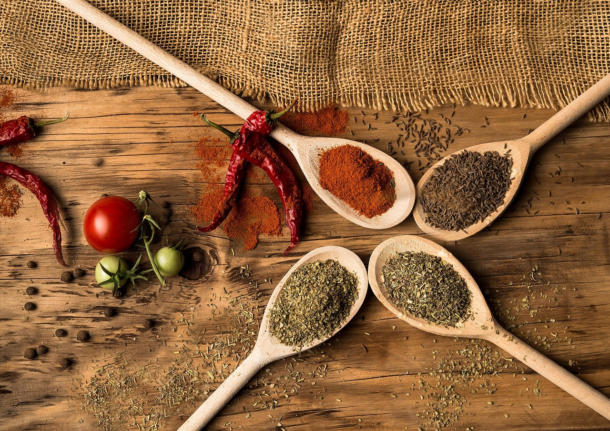
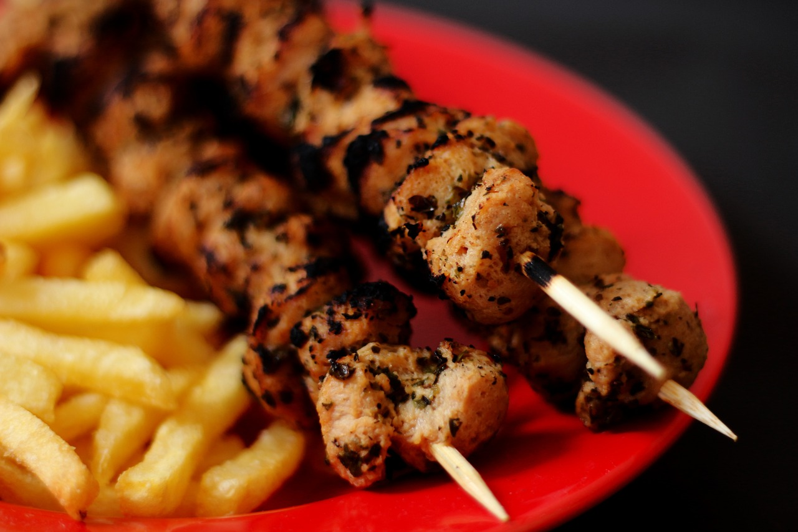
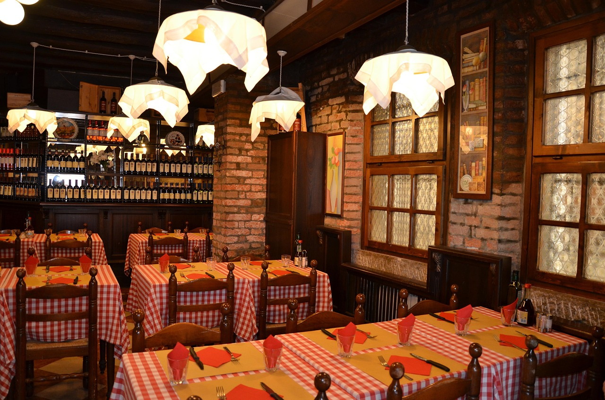

SABORES DA TERRA
A verdadeira essência da culinária regional!
Descubra experiências gastronômicas únicas feitas com ingredientes locais.
Seja muito bem-vindo ao
SABORES DA TERRA
No Sabor da Terra, nossa missão é proporcionar uma experiência gastronômica que celebre a verdadeira essência da culinária brasileira. Situado no coração da cidade, nosso restaurante traz à mesa o melhor dos sabores típicos do Brasil, preparados com ingredientes frescos e de qualidade, respeitando a tradição, mas com um toque contemporâneo.
Aqui, cada prato é uma verdadeira homenagem às riquezas da nossa terra. Trabalhamos com produtos locais, sempre priorizando a sustentabilidade e o apoio aos pequenos produtores. Nossa cozinha é feita com carinho, utilizando receitas autênticas que encantam os paladares e resgatam memórias afetivas de um Brasil cheio de diversidade cultural.
O ambiente do Sabor da Terra é moderno e acolhedor, com uma decoração que mistura elementos rústicos e sofisticados, criando uma atmosfera convidativa para todos. Seja para um jantar em família, uma reunião de amigos ou uma ocasião especial, temos o espaço perfeito para tornar sua refeição ainda mais memorável.
Acompanhe o principal do
NOSSO CARDÁPIO
Feijoada da Casa
Feijão preto, carne seca, paio, arroz, farofa, laranja
R$ 39,90
Moqueca Baiana
Peixe branco, leite de coco, dendê, pimentões, arroz
R$ 44,90
Escondidinho de Carne Seca
Purê de mandioca, carne seca desfiada, queijo coalho
R$ 36,00
Baião de Dois
Arroz, feijão verde, queijo coalho, carne de sol
R$ 34,90
Galinhada Caipira
Frango caipira, arroz com açafrão, legumes frescos.
R$ 32,90Tilápia com Crosta de Castanha
Filé de tilápia, crosta de castanha, purê de banana
R$ 42,00Descubra onde achar
NOSSOS RESTAURANTES
Unidade São Paulo

Endereço: Av. Paulista, 1500 - Bela Vista, São Paulo - SP
Telefone: (11) 99999-9999
WhatsApp: Clique aqui
Gerente: Ana Souza
Nota média: ⭐ 4.8 / 5 (Google)
Como chegar: A 5 minutos do metrô Consolação. Estacionamento no local.
Como chegarUnidade Salvador

Endereço: Largo Tereza Batista, R. Gregório de Matos, 6 - Pelourinho, Salvador - BA
Telefone: (71) 98888-8888
WhatsApp: Clique aqui
Gerente: Carlos Nascimento
Nota média: ⭐ 4.7 / 5 (Google)
Como chegar: Próximo ao Elevador Lacerda. Fácil acesso de ônibus.
Como chegarUnidade Curitiba

Endereço: R. XV de Novembro, 300 - Centro, Curitiba - PR
Telefone: (41) 97777-7777
WhatsApp: Clique aqui
Gerente: Mariana Lopes
Nota média: ⭐ 4.9 / 5 (Google)
Como chegar: A poucos metros da Rua das Flores. Estacionamento conveniado.
Como chegar